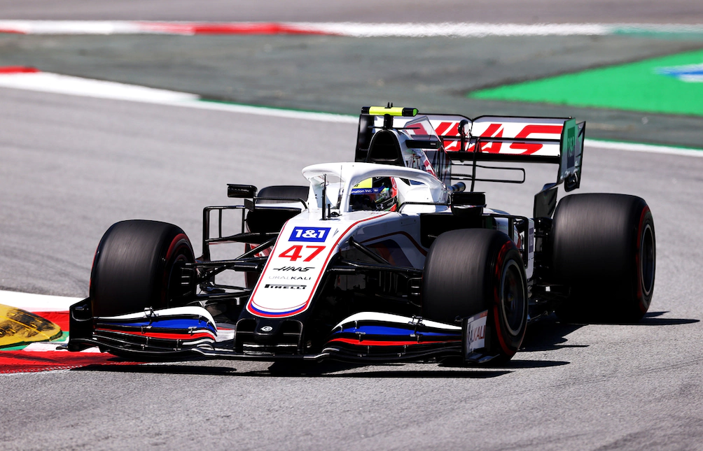

Mick Schumacher è nato a Vufflens-le-Château il 22 marzo 1999, è un pilota automobilistico tedesco, attivo in Formula 1 con la Haas. Membro dal 2019 della Ferrari Driver Academy, ha vinto nel 2018 la F3 europea e nel 2020 la Formula 2. Mick è il figlio del famosissimo ex pilota ferrari Michael costretto al ritiro dalla Formula 1 a seguito di un incidente sciistico che lo ha lasciato in uno stato semi-vegetativo fino ad oggi. Il suo numero di gara è il 47. Alla fine del 2014 effettua i primi test per Jenzer Motorsport in una macchina di Formula 4. Nella stagione 2015 Schumacher debutta nelle monoposto con il nome di suo padre, gareggiando nell'Campionato ADAC di Formula 4 con la squadra Van Amersfoort Racing. Termina il campionato al 10º posto ottenendo una vittoria a Oschersleben. Nella successiva stagione 2016 Schumacher continua in Formula 4, partecipando al campionato tedesco e a quello italiano con il team Prema, una squadra nota per i suoi stretti legami con la Ferrari Driver Academy. Riesce a vincere 5 gare ed arrivare secondo in classifica finale in entrambi i campionati, dietro rispettivamente a Joey Mawson e Marcos Siebert. Nella stagione 2017 Schumacher corre nel campionato europeo di Formula 3 con Prema Powerteam. Nella stagione di debutto nella categoria ottiene un podio e la dodicesima posizione in campionato. Un risultato al di sotto delle altissime aspettative create attorno al giovane pilota. Il suo percorso in F3 europea continua nella stagione 2018 con la stessa scuderia. Dopo una prima parte di stagione difficile, in cui ottiene due terzi posti nelle prime dieci gare, riesce a vincere la sua prima gara nella categoria nella gara 3 di Spa-Francorchamps. Nelle successive gare ottiene altre sette vittorie, di cui cinque consecutive tra il Nürburgrin e il Red Bull Ring. Ad Hockenheim conquista il titolo della categoria con una gara d'anticipo, ottenendo il primo titolo in monoposto. Il 19 gennaio 2019 viene annunciato il suo ingresso nella Ferrari Driver Academy, e nello stesso anno sceglie Nicolas Todt come suo procuratore sportivo, che è lo stesso manager di Charles Leclerc e dell'ex Ferrarista Felipe Massa. Il 2 aprile 2019 effettua il suo primo test su una vettura di Formula 1, debuttando alla guida della Ferrari SF90 sul circuito di Manama. Torna in pista il giorno successivo, al volante dell'Alfa Romeo C38. Il 29 settembre 2020 viene annunciato il suo debutto nella massima categoria nella prima sessione di prove libere della prima edizione del Gran Premio dell'Eifel, sul circuito di casa del Nürburgring, al volante dell'Alfa Romeo C39 di Antonio Giovinazzi. A causa di avverse condizioni meteorologiche, la prima sessione di prove libere è stata cancellata da costringerlo a rinviare il suo debutto in una sessione ufficiale di Formula 1. Durante la prima sessione di prove libere del Gran Premio di Abu Dhabi ha nuovamente la possibilità di guidare una Formula 1, effettuando la sessione a bordo della Haas. Lo stesso giorno viene annunciato dal team statunitense come pilota titolare a partire dal 2021, dopo aver siglato un contratto pluriennale, affiancando il russo Nikita Mazepin, anch'egli promosso nella massima categoria.  Schumacher inizia la stagione con un sedicesimo posto nella prima gara. La Haas VF-21 si dimostra una vettura poco competitiva, non permettendo al tedesco e al compagno di squadra Mazepin di competere per la zona punti. Nelle qualifiche del Gran Premio di Francia, Schumacher ottiene il suo primo accesso alla Q2 in carriera. In gara conclude comunque diciannovesimo, davanti al solo Mazepin. Nel Gran Premio d'Ungheria è costretto a saltare le qualifiche per un incidente nell'ultima sessione di prove libere, ma in gara finisce tredicesimo dopo aver battagliato in pista anche con Max Verstappen, poi promosso dodicesimo dopo la squalifica di Sebastian Vettel, sarà il suo miglior risultato stagionale. Il 23 settembre prima del Gran Premio di Russia il team Haas conferma Schumacher e Mazepin per la stagione 2022. Proprio nella gara russa, il pilota è costretto al primo ritiro in Formula 1, a causa di problemi idraulici. Nelle qualifiche del Gran Premio di Turchia, il tedesco si piazza quattordicesimo (entra per la seconda volta in Q2), retrocedendo al diciannovesimo posto durante la gara, davanti solo al compagno di squadra. Nel Gran Premio di Città del Messico il tedesco si qualifica 18º, ma parte 14º a causa di numerose penalità ricevute da altri piloti; in gara è costretto al ritiro dopo una collisione con Esteban Ocon alla prima curva. In Arabia Saudita Schumacher finisce in barriera all'ottavo giro, causando bandiera rossa[42], nell'ultima gara stagionale chiude quattordicesimo. Schumacher termina la sua stagione d'esordio al diciannovesimo nel campionato piloti senza ottenere punti, davanti a Robert Kubica e al suo compagno di team, Mazepin. Nella stagione 2022 Schumacher oltre a essere primo pilota in Haas diventa terzo pilota della Ferrari insieme ad Antonio Giovinazzi. Schumacher svolge il ruolo di pilota di riserva per i Gran Premi nei quali l'italiano è impegnato nella Formula E.